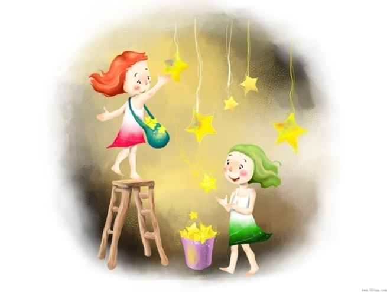

분리불안의 정서와 인지발달
분리불안이란 아이가 친밀하게 느꼈던 애착대상자와 멀어지거나 떨어질 때 불안해서 울음이나 몸짓으로 메달리는 불안정한 행동 등을 나타낸다. 이러한 행동은 일반적으로 돌 전후에 나타나기 시작하여 24개월경에 감소되면서 점차 사라진다. 아이들 대부분 인지와 자아가 발달하면서 낯선 사람이나 낯선 환경에 대한 정서를 의미한다.

아이들에게 양육자와 가정 환경 외의 낯선 환경, 또래 및 교사에게서 느낀다. 아이의 심리적 불안과 위축이 강할수록 사회성 발달을 저해가 되기도 하므로 민감하게 보살펴줘야 할 것이다. 분리불안은 기질과 성격에 의한 낯선 환경에서의 부정적 경험, 따돌림을 받았던 불안정한 경험, 가정에서의 과잉보호로 자립심이 낮은 경우, 양육자의 잦은 다툼과 학대 등으로 인한 갈등, 불안, 두려움 등 부정적인 정서가 내재되어 있기 때문이다.
또한 동생의 출생으로 인한 심리적인 퇴행, 질병으로 입원으로 분리 경험이 있을 때 다소 불안감을 보이지만 대부분 분리불안은 해소된다. 그러나 비정상적으로 심하게 지속적으로 나타내는 경우는 분리불안의 근원이 무엇인지 구체적으로 살펴보아야 할 것이다.
분리불안을 위한 지도 방법
1) 애착과 과잉보호의 근원 찾기
분리불안은 양육자와 집에서만 있었던 아이, 잦은 병치레로 외출을 잘 하지 않았던 아이,친한 친구가 없는 아이는 양육자에게 의존적인 성향이 높은 편이다. 아이는 불안과 무서움이 많고, 갈등이 증가되어 간다. 또한 양육자가 지나치게 과잉보호를 하면 자신이 독립된 개체라는 인식이 약화되어 자주성이 낮아져 두려움이 높다. 하지만 어려서부터 여러 사람과 어울려 지낸 아이, 낯선 사람들과 자주 만나 사귀었던 아이는 사회적 관계를 형성할 수 있고 자신감으로 잘 이겨낼 수 있다.
2) 정서적 안정감과 성취감 제공
아이의 분리불안의 예방을 위해서는 양육자의 일관성 있는 행동이 필요하다. 아이에게 작고 사소한 약속도 반드시 지켜 신뢰를 심어주어야 한다. 양육자는 아이의 시선에서 멀지 않은 곳에서 조용히 기다리다가 아이의 상태에 따라서 적절한 거리두기를 하면 된다. 이후 아이의 안정감과 성취감에 대한 상호작용 기회 제공을 통하여 즐거운 경험으로 제공하면 자기조절을 긍정적으로 내재화하게 된다.
3) 자아탄력성과 상호작용으로 자신감
아이들은 발달 과정과 기질에 따라 변화를 받아들이는 정도가 각각 다르다. 시간이 오래 걸리는 까다로운 기질의 아이는 양육자의 부재에 민감하게 반응하여 예민하게 행동을 보인다. 특히 사회적 관계에서 적절하게 대처하지 못하는 성향인 아이는 외부자극이 많을수록 더욱 예민해져 자신감이 낮아져 힘든 상태가 될 것이다. 그렇지만 아이들 대부분은 또래 아이들과 다양한 놀이를 통한 상호작용으로 자아탄력성과 자신감이 향상될 것이다.
4) 스트레스를 줄이고 긍정 정서 경험
아이는 양육자와 분리된 경험이 부정적인 경험이 있었던 경우는극도의 불안감을 형성하게 된다. 예를 들면, 양육자의 이혼, 양육자의 다툼 및 학대, 양육자의 입원, 사망 등과 같이 심각하거나 갑작스럽게 이루어진 경우에는 심리적 스트레스를 크게 입는다. 일반적으로 양육자와의 분리가 단계적으로 실행되지 못하면 정서적으로 불안정하기 때문이다. 아이의 스트레스는 행동으로 나타나므로 민감하게 살펴 안정감을 제공해야 할 것이다.
5) 등원은 사회적 관계를 위한 훈련
아이의 등원 거부를 지도하기 위해 가정에서 양육자와의 불안한 원인을 먼저 찾아야 한다. 이후 아이의 신체적 발달 상태와 기질 및 성격, 사회적 관계와 환경에 적응할 수 있도록는 기간을 단계적으로 연습해야 긍정적인 결과가 된다. 즉, 양육자와 거리두기를 통한 떨어져 있어도 믿음을 형성할 수 있도록 유대관계를 형성한다. 그리고 아이가 익숙하지 않은 상황은 구체적으로 사전에 설명해 주면 정서적으로 안정을 찾게 될 것이다.
이와 같이 아이의 분리불안은 생활의 자율성과 자주성을 증가시켜 자립심을 형성해야 할 것이다. 일상생활에서 지켜야할 질서와 규칙은 아이에게 선택권을 주는 것이 아니라 기본적인 습관을 올바르게 가르쳐야 사회적 관계도 증가한다. 아이가 악을 쓰면서 울어대거나 반항 등 감정을 나타내는 경우는 불안한 정서를 표출한 것이므로 맞대응하지 말고 그냥 기다려 주면 좋다. 아이는 지금까지 모든 것을 양육자에게 의지했던 것이 성장함에 따라 신체적, 정서적, 인지적으로 자아가 성숙되는 과정에서 불안을 느끼게 된다. 그러므로 양육자는 분리불안에 대한 이해와 더불어 늘 친밀하면서 신뢰할 수 있도록 한다.
2022.02.06 - [분류 전체보기] - 분리 불안과 불안 심리의 차이 - 낯가림, 애착, 두려움과 공포
분리 불안과 불안 심리의 차이 - 낯가림, 애착, 두려움과 공포
분리불안과 불안의 의미 분리불안(separation anxiety)이란 발달과정과 일상생활의 적응 정도에 따라 아이들에게 흔히 나타나는 증세이다. 최초 어머니상(primary mother-figure)의 상실감에 따른 공포증은
think-sis.co.kr